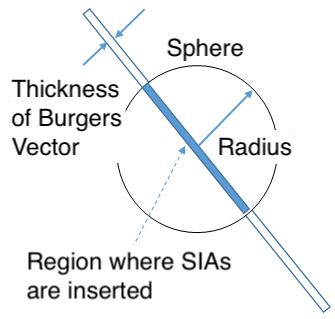

This lecture introduces a method for inserting a dislocation loop into iron crystals. As discussed in the lecture on Inserting Edge Dislocation, an edge dislocation is a lattice defect formed when an extra plane spans over half-space. A dislocation loop is similar; this defect is formed when this extra plane is disk-shaped. When a disk-shaped plane is missing, it is also called a dislocation loop, but we don't discuss such types here.
The actual formation of a dislocation loop involves interstitial atoms, generated from the displacement process of atoms learned in a previous lecture, Radiation Damage, aggregating into a planar structure. Therefore, this lecture is of interest for audience studying materials for nuclear/fusion power, and accelerators.
Strategy of Script
Let's outline how we make a dislocation loop. Look at Fig. 1 below. Consider creating a dislocation loop at the center of the simulation box. First, define a sphere such that the dislocation loop becomes its equator. Thus, the radius and the center of the dislocation loop become identical to those of the sphere. Next, define a thin disc with the Burgers vector thickness of the dislocation loop inside the sphere. In this case the Burgers vector is (1/2)<111>. The blue shaded area in the figure represents this thin disc. Finally, duplicate all atoms within that region to double the number of atoms. After structural relaxation, the dislocation loop will be inserted.

Fig.1: Schematic Picture for Creating a dislocation Loop; The blue shaded part is a disc where the dislocation loop is inserted.
Execution of Script
bccFe_111loop_relax.lcm is the LAMMPS input script for inserting a dislocation loop with a Burgers vector of (1/2)<111> into a BCC iron crystal. Execute it using the following command:
As with edge and screw dislocations, analyzing the dumped file bccFe_111loop_relax.out using DXA in OVITO allows you to verify whether the calculation was successful. In this case, you should be able to confirm the presence of a circular dislocation. Confirm that the Burgers vector is (1/2)<111> in the lower part of the DXA panel. Also, as learned in the previous lecture on Inserting Screw Dislocation, highlight "Dislocations" to verify it is an edge dislocation. If you processed LAMMPS and OVITO correctly, the result should look like the figure below.
First of all, define important variables. These include the box dimensions in the x, y, z directions, the dislocation loop radius, and the lattice constant.
Creating Base Crystal
units metal
boundary p p p
atom_style atomic
lattice bcc ${lc} orient x 1 0 0 orient y 0 1 0 orient z 0 0 1
region box block 0 ${x_box} 0 ${y_box} 0 ${z_box} units box
create_box 1 box
create_atoms 1 box
Since this block has appeared several times, we'll skip the explanation.
Defining Interatomic Force
pair_style eam/fs
pair_coeff * * ./potentials/Fe_Ackland04_ZBL.eam.fs Fe
neigh_modify every 1 delay 0 check yes
I believe no explanation is necessary for this block too.
Defining a Sphere
variable loop_x_center equal ${x_box}/2
variable loop_y_center equal ${y_box}/2
variable loop_z_center equal ${z_box}/2
region sphere1 sphere ${loop_x_center} ${loop_y_center} ${loop_z_center} ${radius} units box
group sphere1 region sphere1
The first three lines define the center position of the sphere, which later will become the center of the dislocation loop as shown in Fig. 1, at the center of the simulation box.
Next, use the region ... sphere command to define a spherical region with a radius equal to the dislocation loop's radius at the loop's center position. The reason for creating the sphere is mentioned above.
Then, use group command to group all atoms contained within that spherical region.
The first three lines define only the direction of the vector.
The next line calculates the coefficient for adjusting the length of the Burgers vector.
The last three lines calculate the three components of the Burgers vector whose length has been adjusted.
Defining Disc Where Dislocation Loop is Inserted
variable tuning_factor equal 0.5
variable loop_x_high equal ${loop_x_center}+${x_norm}/2-${tuning_factor}
variable loop_y_high equal ${loop_y_center}+${y_norm}/2-${tuning_factor}
variable loop_z_high equal ${loop_z_center}+${z_norm}/2-${tuning_factor}
region plane1 plane ${loop_x_high} ${loop_y_high} ${loop_z_high} &
${x_norm} ${y_norm} ${z_norm} side out units box
Now, we'll define a disk of thickness for the Burgers vector and insert atoms into that region. However, defining the disk region directly is difficult, so we first define the half-space below the top surface of the disk.
The tuning_factor used here is an empirically determined parameter intended to prevent the plane's position from overlapping with atomic positions when defining the plane. Without the tuning factor, the script may lead to unstable results.
In the last line, plane1 is defined as the half-space below the top surface of the disk. Please refer to the manual of region for the keyword of side.
Here is the next block:
variable loop_x_low equal ${loop_x_center}-${x_norm}/2-${tuning_factor}
variable loop_y_low equal ${loop_y_center}-${y_norm}/2-${tuning_factor}
variable loop_z_low equal ${loop_z_center}-${z_norm}/2-${tuning_factor}
region plane2 plane ${loop_x_low} ${loop_y_low} ${loop_z_low} ${x_norm} ${y_norm} ${z_norm} side in units box
The first three lines define a point on the bottom surface of the dick.
In the last line, plane2 is defined as the half-space above the bottom surface of the disk.
region cylinder1 intersect 3 sphere1 plane1 plane2
group cylinder1 region cylinder1
Here, we define the intersection of the sphere and the two region of half space as a new region. This is the disk we seek, that is, the region that becomes the extra plane.
Then, group the atoms belonging to the disc region.
Before inserting atoms, shift all atoms belonging to the disk by b/3 in the Burgers vector direction. This process prevents the newly inserted atoms from unstable behavior by overlapping them with the existing atoms.
create_atoms 1 region cylinder1
Place atoms at all lattice sites within this region. This adds one extra crystal plane to this region.
Structural Relaxation
variable dump_interval equal 200
fix 1 all box/relax iso 0.0 vmax 0.001
thermo ${dump_interval}
thermo_style custom step pe lx ly lz press pxx pyy pzz etotal
dump 1 all custom ${dump_interval} bccFe_111loop_relax.out id type xs ys zs
min_style cg
minimize 1e-12 1e-6 50000 10000
The final block is devoted to structural relaxation. Through relaxation, the newly introduced crystal planes and the original crystal planes will have an optimal distance. This results in a dislocation loop forming at the center of the block.
This lecture might have been challenging since we used some complex operations. In particular, we introduced the new usages of region command but didn't go into detailed explanations. However, the audience who've come to this lecture should now be able to look them up in the LAMMPS manual for region.
Discussions
There may be easier ways to insert dislocation loops than the method described here, but once you know one approach that works, you can treat it as a black box. The crucial point here is that the dislocation loops generated by irradiation can be modeled in MD. If this is possible, it opens up various application possibilities, such as dislocation loop migration and interactions between dislocation loops and other lattice defects. These are important issues to evaluate long-term degradation of materials under irradiation.
Dislocation loops are known to suppress plastic deformation because they act as obstacles to dislocation motion that is in charge of plastic deformation. Such situations can also be reproduced using MD. An example is shown in the video below.
Video 1: Confirm that red dislocation loop acts as obstacle to the motion of green edge dislocation. See more detail at Du et al., Materialia 12 (2020) 100778.